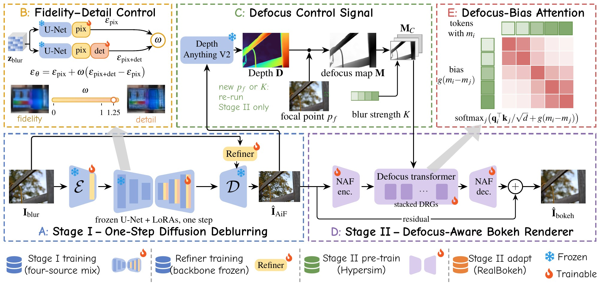
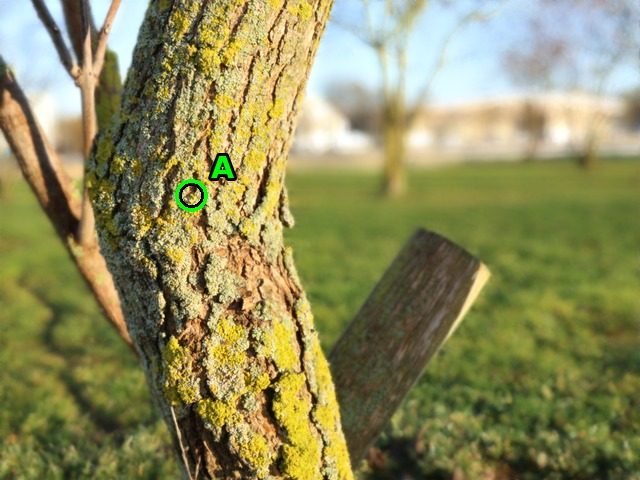
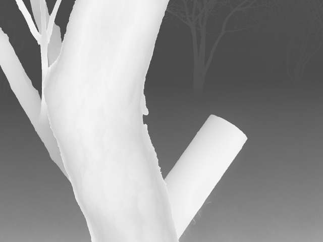

FlashFocus
Interactive Image Refocusing in Seconds
* Equal contribution · † Corresponding author: chihchung@nycu.edu.tw
Pull focus from far to near
Each frame below is one focal edit rendered by FlashReFocus from the same restored all-in-focus image, 3CReal inputs at a long side of 1024. Drag the focus ring to move the focal plane, or play the sweep.
Diffusion only where information is lost
Single-image refocusing changes the focal plane and depth of field of a photograph after capture, which requires recovering detail lost to defocus and rendering new, depth-consistent blur. Recent generative methods run a large diffusion model for every focal edit, making exploration slow. FlashReFocus applies diffusion only where information is lost: a latent diffusion model restores an all-in-focus image once, in a single step, using pixel and detail LoRAs, mixed real and synthetic defocus supervision, and a high-frequency decoder refiner. A 1.3M-parameter renderer then produces each focal setting from a depth-derived defocus map with defocus-bias attention, pre-trained on synthetic scenes and adapted to real lens pairs. We also introduce 3CReal, a benchmark of 89 deep-/shallow-depth-of-field pairs from three camera and lens systems. FlashReFocus achieves the best perceptual fidelity for zero-shot bokeh rendering on EBB! Val176 and 3CReal and strong perceptual quality for deblurring on DPDD and RealDOF. A complete refocus takes 2.5 s, 54.5× and 148.3× faster than DiffCamera and GenRefocus, each further edit takes about half a second, and the explicit defocus map further enables aperture control and tilt-shift effects.
Restore once, render every edit
Single-stage diffusion (DiffCamera, MagicBokeh) regenerates the photo for every focal setting and keeps no reusable all-in-focus image. Two-stage generative refocusing (GenRefocus) reuses the restored image but renders bokeh with a second 12B diffusion transformer, so every edit still costs a full generative pass.
FlashReFocus restores once with one-step diffusion. Rendering a new focal setting is determined by depth and the focal plane, so it needs no generation: a 1.3M-parameter network renders it in under half a second, and the depth of the restored image is computed once and reused by every later edit.

Two stages with different jobs

- Stage I, generative deblurring. A pixel LoRA first learns faithful deblurring, a detail LoRA then adds texture, and the weight ω trades one for the other at inference. A decoder refiner injects a Laplacian pyramid of the input to recover detail lost in VAE decoding.
- Stage II, deterministic rendering. A residual renderer conditioned on the defocus map, focal point and strength adds blur without regenerating content, so focused regions keep the restored detail.
Seconds per refocus
Wall-clock time at 1536×1536 on one NVIDIA RTX PRO 6000, including image read and write per call. First covers restoration and the first rendering; new focus is each further focal edit on the same image.
| Method | Params (B) | First (s) | New focus (s) | TFLOPs first | TFLOPs new | Memory (GB) |
|---|---|---|---|---|---|---|
| DiffCamera | 12.33 | 136.35 | 136.35 | 19,363 | 19,363 | 28.37 |
| GenRefocus | 18.30 | 370.65 | 217.32 | 42,031 | 24,763 | 42.82 |
| BokehDiff† | 3.83 | – | 3.43 | – | 73.4 | 11.82 |
| MagicBokeh† | 1.73 | – | 6.13 | – | 113 | 5.29 |
| FlashReFocus | 1.70 | 2.50 | 0.47 | 120 | 0.85 | 16.94 |
Each edit changes the blur and nothing else
We sweep the focal point over eight depths on three scenes each from 3CReal and RealBokeh test, give GenRefocus the same inputs and focal points, and set our strength so both methods blur the background by the same amount for every focal setting. FlashReFocus keeps in-focus regions close to the restored image and barely changes pixels whose blur should stay the same. GenRefocus regenerates the image at every edit.
| Method | In-focus PSNR ↑ | In-focus LPIPS ↓ | Consistency PSNR ↑ | Seconds per edit ↓ |
|---|---|---|---|---|
| 3CReal | ||||
| GenRefocus | 28.96 | 0.155 | 43.84 | 77 |
| FlashReFocus | 44.44 | 0.036 | 49.91 | 0.10 |
| RealBokeh test | ||||
| GenRefocus | 25.38 | 0.186 | 40.19 | – |
| FlashReFocus | 38.81 | 0.048 | 49.31 | – |
Long side 1024. In-focus fidelity compares each result with the all-in-focus input near the focal depth; consistency compares consecutive edits where the expected blur does not change. Where GenRefocus blurs more than our trained range, FlashReFocus extrapolates the strength or renders twice to match it. Seconds per edit are measured on 3CReal on an otherwise idle GPU.
Same eight focal points, left FlashReFocus, right GenRefocus; the label shows the measured seconds per edit at this resolution.
Aperture as a dial
With the focal point fixed, the strength behaves like an aperture: the background blur grows while the subject stays sharp. Strength controllability (LVCorr) is 0.857 on LFDOF and 0.839 on 3CReal, against 0.690 and 0.666 for GenRefocus. The renderer is trained for strengths 0 to 1; the range from 1 to 2 extrapolates past training and keeps opening the aperture for a stronger look.
Two focal planes
A physical lens has one focal plane. Because the renderer reads an explicit depth map, FlashReFocus can keep two subjects at different depths sharp while the space around them stays blurred: each pixel is blurred by its distance to the nearer of the two planes, with no retraining.




Bokeh rendering and deblurring
Zero-shot bokeh rendering on EBB! Val176 and our 3CReal benchmark, where every method receives the same all-in-focus input and focal point. 3CReal contains 89 deep-/shallow-depth-of-field pairs from three camera and lens systems unseen in training.
| Method | PSNR ↑ | SSIM ↑ | LPIPS ↓ | CLIP-I ↑ | LVCorr ↑ |
|---|---|---|---|---|---|
| EBB! Val176 | |||||
| GenRefocus | 23.80 | 0.868 | 0.2025 | 0.964 | 0.690 |
| MagicBokeh | 23.14 | 0.844 | 0.2398 | 0.933 | 0.799 |
| FlashReFocus | 24.52 | 0.892 | 0.1805 | 0.973 | 0.857 |
| 3CReal | |||||
| GenRefocus | 26.38 | 0.853 | 0.2426 | 0.972 | 0.666 |
| MagicBokeh | 25.64 | 0.833 | 0.2543 | 0.943 | 0.759 |
| FlashReFocus | 27.98 | 0.886 | 0.2178 | 0.981 | 0.839 |
| RealBokeh validation (219 pairs, 2000×1500; not zero-shot for Bokehlicious and FlashReFocus) | |||||
| Bokehlicious | 29.81 | 0.932 | 0.1086 | 0.987 | – |
| MagicBokeh | 22.25 | 0.827 | 0.2730 | 0.934 | – |
| FlashReFocus | 26.38 | 0.897 | 0.1932 | 0.970 | – |
LVCorr is measured on LFDOF for the EBB! block and on 3CReal for the 3CReal block. Excerpt of the paper's Table 3; the full table compares nine methods. RealBokeh validation (Appendix Table G.1) shares the cameras and lenses of the RealBokeh training pairs, which Bokehlicious and FlashReFocus were trained on; GenRefocus, run on the first 10 pairs only (about an hour per image), scores 23.38 dB PSNR and 0.264 LPIPS there against 25.46 dB and 0.246 for FlashReFocus.
| Deblurring (LPIPS ↓) | DPDD | RealDOF |
|---|---|---|
| GenRefocus | 0.1686 | 0.2447 |
| Restormer | 0.1762 | 0.2863 |
| FlashReFocus + refiner | 0.1557 | 0.2437 |
BibTeX
@misc{cheng2026flashfocus,
title = {FlashReFocus: Interactive Image Refocusing in Seconds},
author = {Cheng, Ching-Heng and Lee, Chia-Ming and Chang, Ming-Ching and
Li, Xin and Liu, Yu-Lun and Hsu, Chih-Chung},
year = {2026}
}